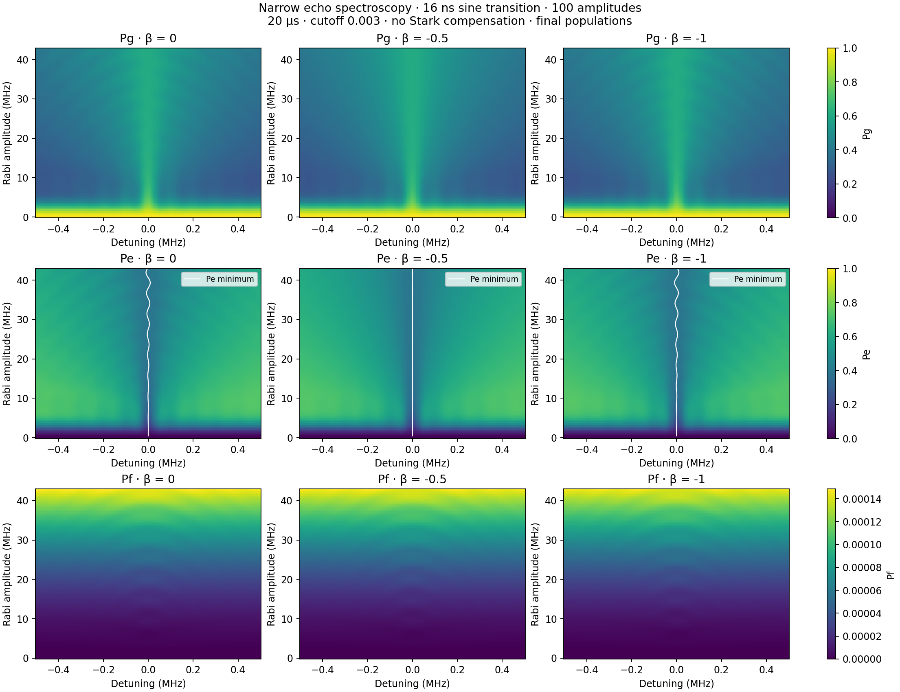
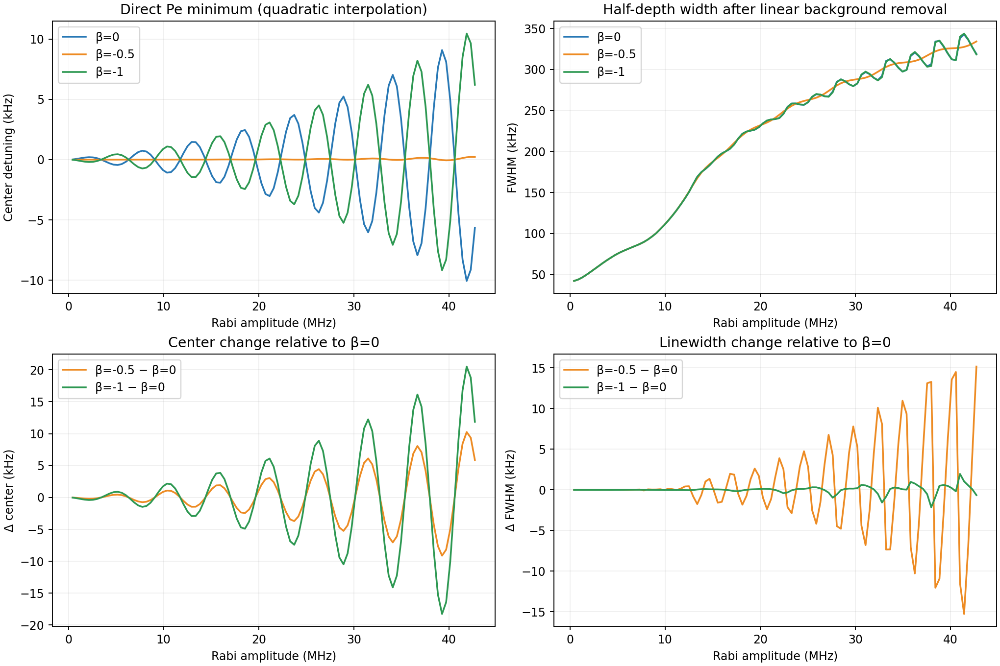
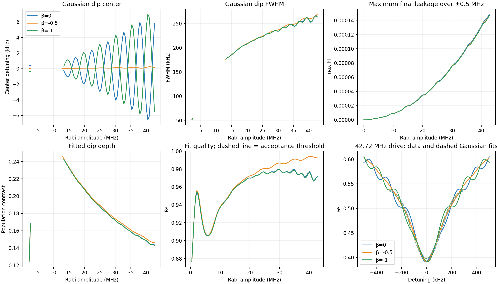
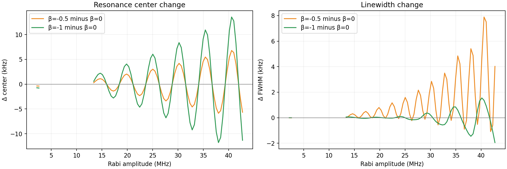
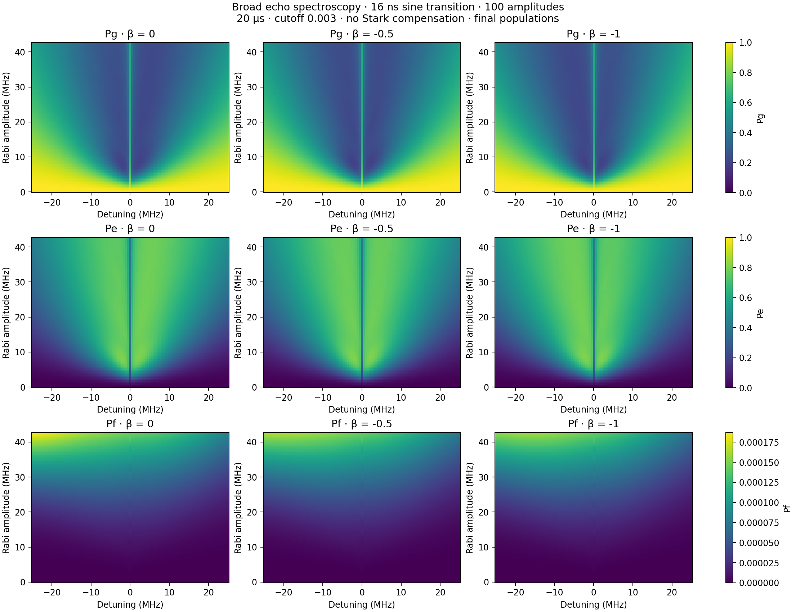
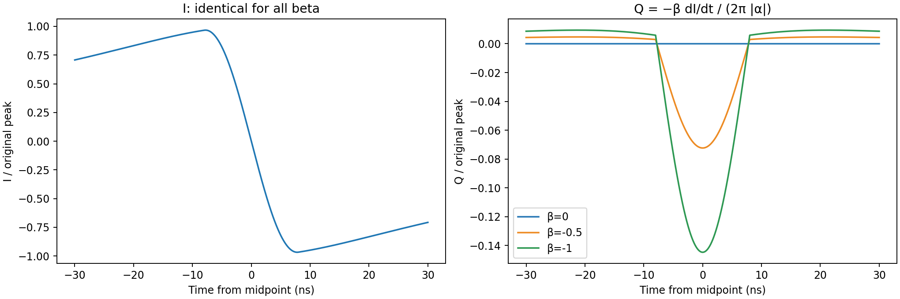

100 amplitude points over the original Figure 2 range (0–42.7 MHz). 20 µs pulse, cutoff 0.003, T1=51.24 µs, T2=7.31 µs, α=−216 MHz. Identical I envelopes; no Stark compensation. All results are simulated final populations. White map curves show directly located Pe minima.
The direct comparison uses the raw Pe minimum, refined quadratically, and a half-depth width after subtracting a linear background fitted to |detuning| ≥ 0.4 MHz. This operational width depends on the chosen background. No smoothing is applied.
The additional Gaussian center and linewidth use a Gaussian fit to Pe over ±0.3 MHz, with one-bin smoothing. Poor, weak, unresolved and clipped fits are omitted. The fit-quality plot and example fits expose deviations from a Gaussian shape.
| β | Pe minimum (kHz) | Half-depth width (kHz) | Max final Pf over narrow map (%) |
|---|---|---|---|
| 0 | -5.66 | 318.98 | 0.01484 |
| -0.5 | 0.22 | 334.15 | 0.01471 |
| -1 | 6.21 | 318.34 | 0.01465 |
These high-drive values are one slice of the amplitude-dependent curves below.
Direct center/linewidth CSV · Gaussian fits CSV · Parameters and convergence






{
"parameters": {
"duration_us": 20.0,
"t1_us": 51.24,
"t_phi_us": 7.871480508563624,
"anharmonicity_mhz": -216.0,
"cutoff": 0.003,
"order": 0.5,
"echo": true,
"echo_transition_shape": "sine",
"drag_beta": 0.0,
"stark_kappa_mhz_inv": 0.0,
"echo_transition_us": 0.016
},
"betas": [
0.0,
-0.5,
-1.0
],
"amplitude_points": 100,
"dt_ns": 0.5,
"summary": [
{
"beta": 0.0,
"max_final_pf": 0.00014844440840473716,
"accepted_fits": 71,
"high_drive_fit": {
"center_hz": 5785.319489172218,
"fwhm_hz": 265086.8529273749,
"center_error_hz": 1493.2390244460748,
"fwhm_error_hz": 6954.581212793059,
"r_squared": 0.9714857842243144,
"contrast": 0.14355581024835104,
"accepted": true
},
"high_drive_direct": {
"center_hz": -5655.208835706657,
"fwhm_hz": 318983.3424833013,
"contrast": 0.19775065786420737,
"accepted": true
},
"max_population_error": 3.263099702666139e-07,
"max_checked_direct_center_error_hz": 0.07343087086337619,
"max_checked_direct_fwhm_error_hz": 0.1934022413333878,
"max_checked_center_error_hz": 0.03663023269655241,
"max_checked_fwhm_error_hz": 0.1446384101291187
},
{
"beta": -0.5,
"max_final_pf": 0.00014705335594041358,
"accepted_fits": 72,
"high_drive_fit": {
"center_hz": 117.79703566079972,
"fwhm_hz": 269109.7658160358,
"center_error_hz": 766.5393793352087,
"fwhm_error_hz": 3672.3350953981317,
"r_squared": 0.9923633996636213,
"contrast": 0.14595216693149757,
"accepted": true
},
"high_drive_direct": {
"center_hz": 223.12595910137395,
"fwhm_hz": 334148.9604373081,
"contrast": 0.20073756297088846,
"accepted": true
},
"max_population_error": 2.524319387964269e-07,
"max_checked_direct_center_error_hz": 0.01420643599504956,
"max_checked_direct_fwhm_error_hz": 0.2520446268026717,
"max_checked_center_error_hz": 0.07193461752117969,
"max_checked_fwhm_error_hz": 0.10933664778713137
},
{
"beta": -1.0,
"max_final_pf": 0.0001465185797265577,
"accepted_fits": 71,
"high_drive_fit": {
"center_hz": -5543.500743582763,
"fwhm_hz": 263136.4140107126,
"center_error_hz": 1508.210876522085,
"fwhm_error_hz": 6937.511699571761,
"r_squared": 0.9708441855532896,
"contrast": 0.14303161761761374,
"accepted": true
},
"high_drive_direct": {
"center_hz": 6209.435121855885,
"fwhm_hz": 318335.69521536084,
"contrast": 0.1975393766224539,
"accepted": true
},
"max_population_error": 3.295947214043693e-07,
"max_checked_direct_center_error_hz": 0.11391888754133106,
"max_checked_direct_fwhm_error_hz": 0.3852288256166503,
"max_checked_center_error_hz": 0.055567440384947986,
"max_checked_fwhm_error_hz": 0.24163088406203315
}
],
"source_runs": {
"broad": "2026-08-25/six_detuning_amplitude_sweeps/03_broad_50mhz_cutoff_0p005_echo",
"narrow": "2026-08-25/six_detuning_amplitude_sweeps/06_narrow_1mhz_cutoff_0p005_echo"
},
"convention": "I=L*s, no renormalization; Q=-beta*dI/dt/(2*pi*abs(alpha)); drive=I-iQ",
"direct_metrics": "Center: raw Pe minimum refined quadratically. Width: nearest half-depth crossings after subtracting linear background fitted on |detuning|>=0.4 MHz; finite-window operational width.",
"fitting": "Pe Gaussian dip on \u00b10.3 MHz after 1-bin Gaussian smoothing; FWHM=2sqrt(2ln2)*sigma. Require R2>=0.95, depth>=0.001, FWHM>=15 kHz, and both half-depth points inside fit window. Zero drive excluded. No uncertainty from fit covariance is interpreted as physical uncertainty.",
"caveat": "Final Pf, not transient peak leakage; three-level Markovian simulation. Fitted center and FWHM describe the Gaussian approximation, not necessarily the exact minimum or literal half-depth width."
}Halving spacing from 5 to 2.5 kHz at selected β=−0.5 amplitudes changed the center by at most 0.155 Hz and width by 74.7 Hz.